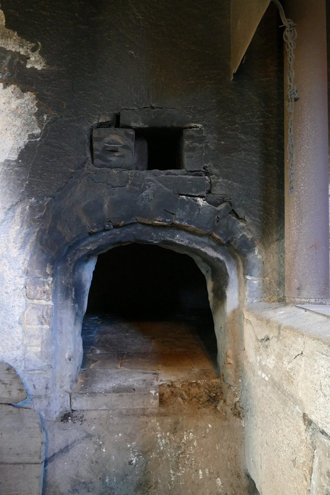

店のこと
二階建ての g と、一階建ての g
お店について確認できているのは、所在地とInstagramのアカウントだけです。
「想像」と書かれた部分は制作側の創作です。お店の実際の様子・考え・商品とは関係がありません。
g
確認できていること
- 屋号は「g bake」、業種はパン屋
- 所在地は広島県三次市畠敷町117-5
- 電話番号はなし。連絡はInstagramから
- 営業時間・定休日・メニュー・価格・ご予約・駐車場は準備中
g
想像してみる
小文字の「g」には、丸が一つの形と、上下に二つの輪がある形があります。屋号の「g」がどちらに近いかは分かりません。ただ、「g bake」という簡単な字面から、制作側は、気取らずに焼きたてを手渡してくれる小さなパン屋かもしれない、と想像しました(実際のお店の姿ではありません)。
gの別の読み方
グラムという連想
パンづくりでは、粉や水を「グラム」で量るのが基本だそうです。「g」の一文字から、制作側は量りの目盛りを思い浮かべました。ただし屋号の「g」が何を指すのかは分からず、グラムとは限りません。あくまで制作側の遊びです。

町のこと
三次市について

三次市は広島県の北部にある市で、盆地の地形や、朝に霧が出やすいことで知られているとされます(一般的な情報で、お店との関係は不明です)。畠敷町という町名から畑を連想する人もいるかもしれませんが、これも制作側の連想です。
写真は国外のフリー素材で、三次市の風景ではありません。